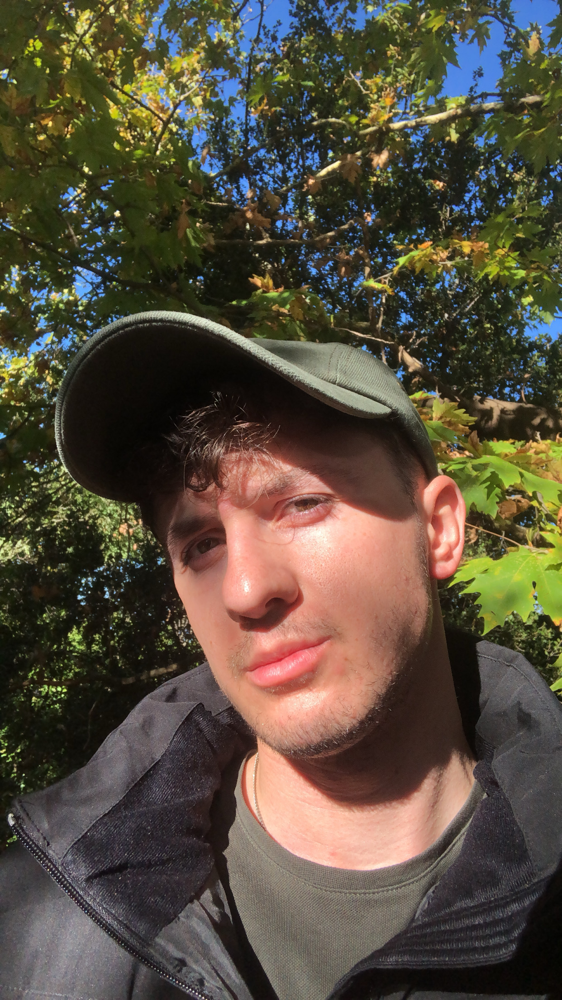

Armando Ndoϊ

Περίληψη
Εχω εξειδίκευση στην πληροφορική και την ψηφιακή δημιουργία
Eκπαίδευση
- Πτυχίο Μηχανικού Λογισμικού,Τμήμα Ψηφιακών Συστημάτων(2018-2024)
Πορϋπηρεσία
- Έργο Περιφέρειας Πελοποννήσου στο Οδικό Δίκτυο
06/2022-08/2022
- Υπεύθυνος για την ασφάλεια των εργαζομένων και τη διασφάλιση της ομαλής ροής της κυκλοφορίας των αυτοκινήτων.
Δεξιότητες
- Eπικοινωνία
- Ευελιξία
- Δημιουργικότητα
Πιστοποιήσεις και Βεβαιώσης
- Leader Shaping - Εν συναίσθηση, Ενεργή Ακρόαση (04/04/2023)
- Μάθε παιδί μου Coding & Gaming ( 17/06/2022 )
- How to Design & Build a Website
Αλλα